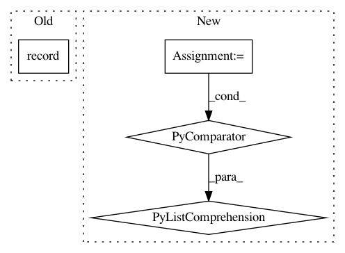

563acaf48cf475f4b125fd32374c6bb566049551,src/garage/torch/algos/vpg.py,VPG,process_samples,#VPG#Any#Any#,268
Before Change
tabular.record("Iteration", itr)
tabular.record("AverageDiscountedReturn", average_discounted_return)
tabular.record("AverageReturn", average_return)
tabular.record("Extras/EpisodeRewardMean",
np.mean(self._episode_reward_mean))
tabular.record("NumTrajs", len(paths))
tabular.record("StdReturn", np.std(undiscounted_returns))
After Change
total_length=self.max_path_length,
axis=0) for path in paths
])
actions = torch.stack([
loss_function_utils.pad_to_last(path["actions"],
total_length=self.max_path_length,
axis=0) for path in paths
])
rewards = torch.stack([
loss_function_utils.pad_to_last(path["rewards"],
total_length=self.max_path_length)
In pattern: SUPERPATTERN
Frequency: 3
Non-data size: 4
Instances
Project Name: rlworkgroup/garage
Commit Name: 563acaf48cf475f4b125fd32374c6bb566049551
Time: 2019-11-06
Author: 43084978+yonghyuc@users.noreply.github.com
File Name: src/garage/torch/algos/vpg.py
Class Name: VPG
Method Name: process_samples
Project Name: elbayadm/attn2d
Commit Name: a615533788c1842483a9708787db0d73902dc1ec
Time: 2017-09-19
Author: myleott@fb.com
File Name: fairseq/multiprocessing_trainer.py
Class Name: MultiprocessingTrainer
Method Name: _scatter_samples